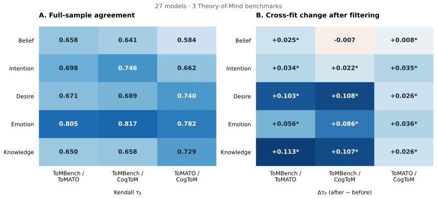
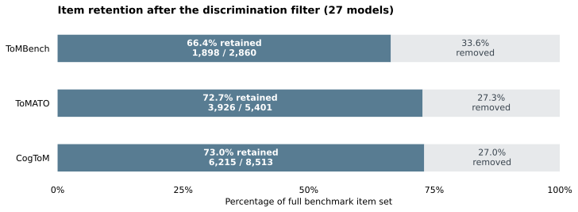

Abstract
Do current Theory-of-Mind (ToM) benchmarks measure a coherent construct, or merely benchmark-specific artifacts? We conduct a psychometric audit of three ToM benchmarks sharing a five-category mental-state taxonomy but differing sharply in design. Across all shared categories, the benchmarks converge strongly on the same model rankings; classical-test-theory filtering further strengthens this agreement while revealing that published item counts substantially overstate genuine measurement capacity. Exploratory factor analysis identifies a single dominant latent factor rather than five separable mental-state dimensions. Discriminant-validity tests show that ToM performance correlates with, but is not reducible to, general language ability. These findings support treating current ToM benchmarks as coherent but imprecise instruments whose scores remain partly confounded with general language competence. This work also lays the groundwork for interactive and adaptive ToM item design, a necessary step before tackling the harder problem of calibrating signal from noise under interaction.
1. Introduction & Background
Theory of Mind (ToM), the capacity to attribute beliefs, desires, intentions, and emotions to others, is foundational to human social cognition (Beaudoin et al. 2020) and is important for capable LLM deployment in agentic and social settings. The practical stakes are concrete: when LLMs are equipped with explicit ToM representations linking percepts, beliefs, desires, and actions, embodied agents achieve more task milestones and collect more unique items than ToM-free baselines in open-ended environments (Lică et al. 2026). Yet if the benchmarks used to certify ToM capability are themselves psychometrically unsound, the downstream decisions they support, such as which models are deployed in social roles and which are trusted in autonomous agentic pipelines, rest on measurement that has never been validated. ToM benchmark scores are used to argue that certain models possess social intelligence, are safe for human-facing roles, or have crossed a threshold of genuine mental-state reasoning (Kosinski 2024; Chen et al. 2024). These are consequential claims: they influence which models are advanced in safety-critical evaluations and trusted in autonomous social applications. Yet they rest on an assumption that has gone largely unexamined: that ToM, as operationalized in LLM benchmarks, is a psychometrically coherent construct that different measurement instruments will assess consistently, and whose published item counts reflect genuine measurement capacity.
The measurement problem.
The empirical record casts doubt on both the reliability and the construct validity of current ToM benchmarks. Kosinski (2024) reported GPT-4 solving 95% of classic false-belief tasks and argued ToM-like ability had emerged spontaneously from large-scale training; Ullman (2023) replied that small, logically irrelevant perturbations collapsed performance, suggesting surface pattern matching rather than genuine belief attribution. This exchange spawned a wave of new ToM benchmarks but did not resolve the underlying measurement question: do aggregate accuracy scores reflect a coherent latent construct, or an amalgam of loosely related surface tasks unified by name rather than by measurement? A structural critique sharpens the concern: Riemer et al. (2024) argue that the dominant paradigm of LLM ToM evaluation is broken at the design level, because benchmarks developed for human subjects implicitly assume self-consistent reasoning across questions — an assumption known not to hold for current LLMs. They distinguish literal ToM (predicting the behavior of others from static context, what virtually all existing benchmarks test) from functional ToM (adapting to a partner in-context following a rational response to their behavior), and demonstrate empirically that strong literal ToM performance does not imply strong functional ToM performance, nor vice versa. More recent empirical work compounds the concern: Jones, Trott, and Bergen (2024) found uneven LLM performance across a six-experiment ToM battery, and Tong et al. (2026) reported substantial heterogeneity across 22 models and 46 paradigms — both consistent with ToM not functioning as a unified capacity in LLMs — but neither study applied formal psychometric analysis to their task sets. Bean et al. (2026) showed, in a systematic review of 445 LLM benchmarks, that leaderboard scores are routinely treated as evidence of coherent underlying capability without any structural validity check. ToM benchmarks are no exception.
Addressing this requires tools from measurement science. Construct validity (Cronbach and Meehl 1955; Salaudeen et al. 2025) asks whether an instrument measures what it claims; a benchmark may produce stable, reproducible scores that consistently measure the wrong thing. Convergent validity — the degree to which two instruments claiming to measure the same construct agree in their assessments — is its canonical operationalization for cross-instrument comparison (Perlitz et al. 2024). Classical test theory (CTT) item discrimination (Furr and Bacharach 2014; Edelen and Reeve 2007) quantifies how much each item contributes signal versus noise to model-level ability estimates; the attenuation bound () implies that low-reliability instruments cannot, in principle, exhibit high cross-benchmark convergence regardless of how genuine the underlying construct is (Furr and Bacharach 2014). Together, these tools allow us to distinguish two explanations for benchmark divergence: measurement noise (low-discrimination items pulling rankings in opposite directions) versus genuine construct fragmentation (the benchmarks operationalizing fundamentally incompatible notions of ToM). Lalor, Wu, and Yu (2016) established IRT as a principled framework for NLP benchmark item analysis; Burnell et al. (2023) argued for Kendall’s as the appropriate rank-correlation statistic at modest model counts.
This paper.
We apply this psychometric framework to ToMBench (Chen et al. 2024), ToMATO (Shinoda et al. 2025), and CogToM (Tong et al. 2026) — three Theory-of-Mind benchmarks sharing the AToMS five-category taxonomy (Beaudoin et al. 2020) but embodying sharply opposed designs (hand-authored vignettes, multi-turn role-played conversations, and cognition-inspired task paradigms). Through a three-stage pipeline on an expanded panel spanning 1.0B–72.7B parameters, we establish: (1) cross-benchmark convergent validity across all three pairwise comparisons, (2) CTT item-discrimination filtering, and (3) a repeated cross-fit re-test, run independently on each benchmark pair, to avoid selection bias. We find that all five mental state categories achieve strong convergent validity pre-filter in every pairwise comparison, with item filtering yielding a positive improvement in agreement for 14 of the 15 pairwise-category tests — the sole exception being Belief on the ToMBenchCogToM pair, which is directionally null. An exploratory factor analysis reveals a single common factor rather than five separable subconstructs, with a large unexplained residual. These findings support the interpretation that ToM benchmarks measure a shared construct once measurement noise is removed, but that roughly a quarter to a third of published items contribute no discriminative signal.
2. Methods
The study uses five benchmarks in total. Three are Theory-of-Mind instruments sharing the AToMS five-category taxonomy (Belief, Intention, Desire, Emotion, Knowledge) but differing in design: ToMBench (Chen et al. 2024) (2,860 hand-authored MCQ items spanning 31 fine-grained abilities); ToMATO (Shinoda et al. 2025) (5,401 items directly organized into the five AToMS categories); and CogToM (Tong et al. 2026) (8,513 items spanning 46 cognitive-science paradigms, organized into seven categories — the five AToMS categories plus Percept and Non-Literal). Item prompts are formed using each benchmark’s published template. For the cross-benchmark convergent-validity analyses, ToMBench items are restricted to the five shared categories via a 315 ability mapping (yielding 2,112 items; Appendix C), and CogToM items are restricted to its five AToMS-compatible categories; the Percept and Non-Literal categories are excluded from cross-benchmark analyses.
Two general language understanding benchmarks serve as discriminant-validity controls: HellaSwag (Zellers et al. 2019), a commonsense reasoning benchmark (9,609 items, story-continuation MCQ with adversarially generated foils); and MMLU-Pro (Wang et al. 2024), a challenging multiple-choice knowledge benchmark across 14 disciplines (12,032 items).
Model panel. We evaluated open-weights instruction-tuned LLMs spanning 1.0B–72.7B parameters across ten architecture families, including Qwen-2.5 ({1.5B, 3B, 7B, 32B, 72B}), Qwen-2 (72B), Llama-3.2 ({1B, 3B}), Llama-3.1 ({8B, 70B}), Llama-3 (8B), Gemma-3 (1B), Gemma-2 ({2B, 9B, 27B}), Phi ({3.5-mini, 3-medium-14B}), Mistral ({7B-v0.3, Nemo-12B, Small-3-24B}), Yi-1.5 ({9B, 34B}), OLMo-2 ({7B, 13B}), Granite-3.1-8B, SmolLM2-1.7B, and Falcon3-10B (Table 1). All models are served via vLLM (Kwon et al. 2023) at temperature 0 through Modal, with each model’s tokenizer chat template applied. ToMATO prompts that exceeded each model’s context window with the 8-token answer budget were left-truncated (preserving system prompt and final user question). The full binary response matrix is materialized in three parquet files (one per ToM benchmark). Parse failures are coded as 0 (incorrect) in all accuracy calculations; post-fix parse-failure rates are below 3% for all models on all three ToM benchmarks (max 2.55% for Yi-1.5-34B on CogToM), with models exceeding 2% noted in Table 1 ().
2.1 Stage 1: cross-benchmark convergent validity
For each shared AToMS category, we compute Kendall’s rank correlation between mean-accuracy model orderings for all three pairwise benchmark comparisons (ToMBenchToMATO, ToMBenchCogToM, ToMATOCogToM), with 95% CIs from 1,000 paired item-bootstrap iterations per pair. Holm–Bonferroni correction at adjusts for the five simultaneous category tests within each pair. We adopt with lower CI bound as the acceptance criterion for substantive convergent validity. Each pair’s aggregate is the unweighted mean of its five per-category values; the overall aggregate reported is the unweighted mean across all three pairs.
2.2 Stage 2: CTT item-discrimination filter
The CTT failure modes imply that items with near-zero variance across the panel or that fail to correlate with overall model performance contribute primarily measurement noise rather than discriminative signal. We apply a fixed item-filtering rule symmetrically. Item is dropped if (a) across the panel, or (b) its leave-one-out classical-test-theory point-biserial discrimination falls below 0.15, where is model ’s total score excluding item . The 0.15 cutoff is the standard psychometric threshold below which items are flagged as uninformative (Furr and Bacharach 2014; Edelen and Reeve 2007). We use point-biserial rather than 2PL IRT discrimination because even at the hierarchical Bayesian 2PL would require larger sample sizes for stable parameter estimation (König, Spoden, and Frey 2020; Fujimoto and Neugebauer 2020); CTT discrimination remains consistent and interpretable at this scale. A robustness threshold of is also reported.
2.3 Stage 3: repeated cross-fit re-test on filtered benchmarks
To address potential selection bias where items are selected for discrimination on the same panel used to measure convergence, we employ a repeated stratified -fold cross-fit design (K=5 folds, 10 random seeds, 50 folds total), splitting on items rather than models, run independently for each of the three benchmark pairs. For each pair and category, the items contributed by both benchmarks are pooled and partitioned into 5 folds. Within each fold: (i) a discrimination mask is fit on the pooled training items (the other K-1 folds) against an anchor score derived from those training items and thresholded at ; (ii) each held-out test item’s discrimination against that anchor is computed and thresholded the same way; (iii) each benchmark’s model accuracies are recomputed restricted to its own surviving test items, and is computed between the two benchmarks’ accuracy vectors both before (all test items) and after (filtered test items) applying the mask. Because items have no cross-benchmark correspondence, the mask is fit and applied entirely within the pooled item pool of each pair, so no item-level alignment across benchmarks is required, and the filter is never fit and evaluated on the same items. The headline statistic per pair and category is , averaged across the 50 folds, with bootstrap CIs and -values from the fold distribution (Holm–Bonferroni-adjusted within each pair across the five categories). Category-level and aggregate summary statistics combine the three pairs by taking the unweighted mean of the three pairwise values. Because this averages only three estimates, we report a conservative interval rather than a pooled bootstrap CI: each pair contributes its own fold-level CI, and the conservative per-category interval is the widest span across the three pairs’ CIs (i.e., the minimum lower bound and maximum upper bound). The aggregate conservative CI is, in turn, the widest span across the five categories’ conservative intervals. A consistently positive across pairs and categories supports Scenario A (apparent benchmark divergence reflects measurement noise); a persistent or reversed for a given category supports Scenario B for that category specifically (the benchmarks operationalize that mental-state category in genuinely incompatible ways despite the shared taxonomy). Per-pair, per-category sample loss is reported in Appendix F (Table 6); across all three pairs, no fold was excluded for insufficient sample size.
2.4 Baselines and controls
The audit uses two within-design baselines: (i) the raw cross-benchmark at Stage 1 serves as the baseline against which the filter-induced Stage-3 is compared, and (ii) within each of the three pairwise comparisons, the two benchmarks serve as each other’s baseline within shared AToMS categories (no single benchmark, including CogToM, is privileged as ground truth). No external single-model baseline is used; the validity claim is purely cross-instrument.
The final panel spans 1.0B–72.7B parameters and ten architecture families (Table 1). Mean overall accuracies of 0.607 (ToMBench), 0.619 (ToMATO), and 0.660 (CogToM) confirm that all panel models are well above guessing (25% / 25% / 25%) on all three benchmarks but well below ceiling, providing operating range for both convergent-validity and item-discrimination analyses. CogToM’s higher mean accuracy is broadly consistent across models rather than driven by a few outliers. Parse failures are coded as incorrect; all post-fix parse-failure rates on the three ToM benchmarks are .
3. Results
3.1 Stage 1: all five categories achieve convergent validity
Per-pair, per-category Kendall statistics with paired item-bootstrap 95% CIs are reported in Table 2 (Appendix B), and shown as pairwise estimates in the left panel in Figure 1. All 15 paircategory cells satisfy the acceptance criterion (Holm-adjusted within each pair): ranges from (Belief, ToMATOCogToM) to (Emotion, ToMBenchCogToM), and every cell exceeds both the threshold and the LCB criterion. Each pair’s own aggregate is similar in magnitude: ToMBenchToMATO , ToMBenchCogToM , ToMATOCogToM . Emotion is the most convergent category in all three pairs ( throughout); Belief is the least convergent in all three (–). Averaging across all three pairs, the overall aggregate is — essentially unchanged from, and marginally higher than, the original two-benchmark estimate, indicating that adding a third, independently-constructed instrument does not weaken the convergent-validity signal.

3.2 Stage 2: substantial item dropout from discrimination filter
Figure 2 summarises full-benchmark item retention after the discrimination filter. ToMBench: 66.4% of all items survive the filter (1,898/2,860), and 8.0% have zero variance across the panel; within the five shared AToMS categories used for cross-benchmark analysis, 67.7% survive (1,429/2,112). ToMATO: 72.7% survive (3,926/5,401), of which 4.6% have zero variance; ToMATO has no items outside the five shared categories, so its full-benchmark and five-category retention coincide. CogToM: 73.0% survive (6,215/8,513), of which 7.0% have zero variance; within its five AToMS-compatible categories (Section 2), 75.9% survive (4,362/5,747). On all three benchmarks the median exceeds the threshold, indicating that the majority of items do discriminate; yet a consistent 27–34% of items fall below threshold or exhibit zero variance and contribute no discriminative signal, explaining why the median and mean can sit comfortably above 0.15 while a substantial minority of items are uninformative. The published item counts overstate effective measurement capacity by roughly a quarter to a third (34% ToMBench, 27% ToMATO, 27% CogToM).

3.3 Stage 3: an item-level cross-fit, run independently on each pair
Re-computing on the held-out folds of the repeated 5-fold cross-fit (50 folds per pair, 150 fold-results per category in total) yields Table 3 (Appendix B) and the right panel of Figure 1. The cross-fit addresses selection bias by ensuring the discrimination anchor is estimated from training items before being applied to held-out items, and this is done independently within each of the three pairs. 14 of the 15 paircategory cells show a significant positive (Holm-adjusted bootstrap CI excluding zero); the sole exception is Belief on ToMBenchCogToM (, , CI ), which is directionally null rather than reversed. As a validation check, the ToMBenchToMATO pair alone reproduces the original two-benchmark cross-fit almost exactly (Belief , Intention , Desire , Emotion , Knowledge ), confirming the extended pipeline is consistent with the prior result rather than a methodological artifact.
Averaged across the three pairs, the gains are again largest for the categories that carried the most measurement noise — Knowledge () and Desire () — moderate for Emotion () and Intention (), and smallest and least robust for Belief (), which is the only category where one of the three pairs (ToMBenchCogToM) does not show a positive rescue. The aggregate improvement is with a conservative 95% interval of (Section 2.3); the interval is wide because it is built from only three pairwise estimates rather than a pooled bootstrap, and it should be read alongside the fact that 14 of 15 underlying cells are individually significant and positive, not as evidence of a null aggregate effect. This is achieved while discarding 27.3% of held-out items on average across all pairs and categories (22.1% for Desire to 31.2% for Emotion; per-pair, per-category loss in Appendix F, Table 6), with no fold excluded for insufficient sample size — the rescued convergence comes from removing low-signal items. This supports Scenario A for four of the five categories: apparent benchmark divergence partially reflects measurement noise rather than fundamental incompatibility. Belief is the one category where the evidence is mixed — robustly rescued between ToMBench and ToMATO, but not between ToMBench and CogToM — suggesting its cross-instrument fragility may be specific to how CogToM operationalizes belief-tracking items rather than a general property of the category.
3.4 Factor structure: one dominant factor
With crossing the minimum threshold for exploratory factor analysis, we ran EFA (principal-axis factoring, varimax rotation, factor count set by parallel analysis) and standardized PCA on each benchmark individually and on the pooled three-benchmark item set (ToMBench, ToMATO, and CogToM combined), to test whether the data resolve into five AToMS subconstructs or a single dominant dimension. Sampling adequacy on ToMBench is excellent (KMO, Bartlett ); for the pooled set ( items models), the item-by-item correlation matrix is necessarily rank-deficient, so KMO/Bartlett return a degenerate rather than meaningful result there, and we instead rely on EFA convergence and variance explained as evidence of factorability. Results are summarized in Table 4 (Appendix B).
Parallel-analysis EFA retains a single common factor on every matrix — ToMBench, ToMATO, CogToM, and the pooled three-benchmark set — not five, accounting for 19.5–24.6% of total variance (38.5% of common variance on ToMBench), positive evidence for a unified ToM construct over five separable mental-state subconstructs. CogToM’s single factor explains 24.6%, somewhat higher than ToMBench (19.5%) and ToMATO (20.2%), consistent with its broader and more cognitively diverse paradigms loading on the same underlying dimension. PCA scree plots show a consistent elbow at the second component on every matrix (PC1 , PC2 on ToMBench; PC1 , PC2 on ToMATO; PC1 , PC2 on CogToM; PC1 , PC2 on the pooled set); Kaiser’s eigenvalue rule over-extracts at , retaining 26 components, so we rely on parallel analysis and the scree elbow instead. We hypothesize, but do not claim to establish, that this secondary axis reflects a partial separation between belief-tracking and intention/social-reasoning items. The leading component captures only 20–25% of total variance on every matrix, leaving 75–80% of variance unexplained.
3.5 Discriminant validity: ToM vs. general language understanding
We conducted discriminant validity testing comparing three ToM benchmarks (ToMBench, ToMATO, CogToM) with general language understanding benchmarks (HellaSwag and MMLU-Pro) on the same panel, to test whether ToM benchmarks measure a distinct construct from general language ability. Full pairwise statistics are in Appendix G.
Within vs. cross-construct correlations. The within-ToM correlations are consistently strong across all three pairwise comparisons (mean ), exceeding both the six cross-construct correlations (each ToM benchmark against each general benchmark, mean ) and the within-general correlation (HellaSwagMMLU-Pro, ; Table 7). With a third, independently-constructed ToM instrument included, the discriminant signal is cleaner than the original two-benchmark comparison suggested: the within-ToM/cross-construct gap widens from 0.05 (ToMBenchToMATO alone vs. the four-pair cross-construct mean) to 0.074, and within-ToM convergence now visibly exceeds within-general convergence rather than merely matching it.
Partial correlation analysis. To isolate the unique ToM component, we computed partial Kendall for each within-ToM pair, controlling for MMLU-Pro, HellaSwag, and both jointly (Table 8). All nine partial correlations remain significant despite shrinkage. Averaged across the three pairs, controlling for both general benchmarks leaves (33% shrinkage) — smaller than the 41% shrinkage observed for ToMBenchToMATO alone, the only pair available in the original two-benchmark analysis. The pattern is uneven: ToMBenchCogToM is the least confounded (18.8% shrinkage) and ToMBenchToMATO the most (41.1%), so the original two-benchmark estimate of the ToM-specific residual was, if anything, conservative. HellaSwag (commonsense continuation) absorbs more of the ToM convergence than MMLU-Pro (academic knowledge) in every pair, consistent with ToM benchmarks loading more on everyday social/commonsense reasoning than on factual recall.
Variance decomposition. As a complementary, per-benchmark view, we regressed each ToM benchmark’s overall accuracy on a composite general-ability score (mean of standardized HellaSwag and MMLU-Pro accuracy); the regression gives the share of variance attributable to general ability. ToMATO is the most general-dependent (85.4% general, 14.6% unexplained), CogToM is intermediate (74.7%/25.3%), and ToMBench retains the largest unexplained component (69.7%/30.3%) — consistent with the partial correlations above, since the two highest-shrinkage pairs both involve ToMATO while the one pair excluding it (ToMBenchCogToM) has the lowest shrinkage.
Interpretation. A coherent ToM construct does exist and is not entirely reducible to general language ability, even as it remains partly confounded with it (some of which may reflect shared MCQ formatting rather than pure construct overlap). The three-pair pattern strengthens, rather than overturns, the original two-benchmark conclusion.
4. Discussion
Across five analyses a consistent picture emerges. ToMBench, ToMATO, and CogToM show substantially concordant model orderings within every AToMS category and across all three pairwise comparisons, and a single common factor underlies all three, individually and pooled. ToM as operationalized in these benchmarks therefore behaves as a coherent, largely unidimensional construct rather than five separable mental-state abilities.
An item-level cross-fit, run independently on each of the three benchmark pairs to avoid fitting and evaluating the discrimination filter on the same items, shows that convergence improves once low-discrimination items are removed in 14 of 15 pairwise-category tests: the gain survives held-out evaluation, so where it appears it reflects genuine measurement-noise reduction rather than overfitting to the panel. The one exception is Belief on the ToMBenchCogToM pair, where filtering produces a small, non-significant change rather than a positive rescue — a localized, category-specific caveat rather than a general failure of the filtering approach.
Three further cautions temper this otherwise positive reading. First, roughly a quarter to a third of published items carry no discriminative signal, so leaderboard item counts overstate effective measurement. Second, the construct these benchmarks measure remains confounded with general language ability, though less so than a two-benchmark comparison alone would suggest: averaged across all three within-ToM pairs, controlling for HellaSwag and MMLU-Pro shrinks convergence by 33% (vs. 41% for ToMBenchToMATO alone), with the two CogToM-involving pairs retaining more of their raw convergence. Third, the three-pair aggregate’s conservative confidence interval is wide and should not be over-interpreted in isolation from the underlying pairwise significance pattern. ToM scores on current benchmarks therefore partly track general capability; pruning low-discrimination items sharpens them for most categories, while more fully separating mental-state reasoning from general ability remains an open problem for benchmark design.
This audit is also a necessary, if unglamorous, precursor to the broader interactive-measurement agenda: before a functional or interactive ToM evaluation can attribute behavioral change to a model’s in-context adaptation rather than to noise, the literal item pools it builds on must already be known to carry signal. Treating static benchmarks as already-solved infrastructure, rather than auditing them with the same rigor demanded of adaptive or strategic evaluation settings, risks inheriting — rather than diagnosing — measurement problems once interaction, optimization pressure, or temporal drift are layered on top.
4.1 Limitations
With below the sample sizes at which confirmatory factor analysis and 2PL IRT item-parameter estimation become stable (König, Spoden, and Frey 2020; Fujimoto and Neugebauer 2020), we use CTT point-biserial discrimination for item filtering and limit structural conclusions to exploratory factor analysis and PCA. We caution that the common rule of thumb is a lower bound for these methods, not a guarantee of robustness; item-level confirmatory modeling here would likely need a substantially larger and more diverse panel than . CTT discrimination at the item level assumes unidimensionality within each benchmark; the single-factor EFA evidence supports this, but confirmatory tests await larger panels. The repeated cross-fit, while addressing selection bias, reduces effective sample size per held-out fold; K=5 with 10 seeds was chosen to balance bias-variance tradeoffs and stabilize the per-category estimates at . The three-pair aggregate in Stage 3 averages only three pairwise estimates per category, so its reported interval is a conservative span rather than a properly pooled bootstrap CI, and is consequently wide; the underlying pairwise significance pattern (14 of 15 cells, Table 3) is the more informative summary. The pooled three-benchmark EFA’s correlation matrix is rank-deficient ( items models), so KMO and Bartlett’s test are not reported for that analysis (Section 3.4); we rely instead on EFA convergence and the magnitude of variance explained. The discriminant-validity analysis against HellaSwag and MMLU-Pro (Section 3.5) now covers all three within-ToM pairs, with full 95% CIs and bootstrap -values for every partial correlation.
5. Conclusion
We conducted a convergent-validity-and-reliability audit of LLM Theory-of-Mind benchmarks, evaluating three instruments — ToMBench, ToMATO, and CogToM — that share the AToMS mental-state taxonomy under sharply different operationalizations. Five findings stand out. (1) Convergent validity is strong across all categories and all three benchmark pairs (Section 3.1). (2) Published item counts overstate effective measurement: roughly a quarter to a third of items carry no discriminative signal (Section 3.2). (3) An item-level cross-fit confirms genuine filtering benefit for the large majority of pairwise-category tests, with Belief on ToMBenchCogToM the lone exception, supporting the interpretation that ToM-as-construct is more robust across operationalizations than raw benchmarks suggest (Section 3.3). (4) Factor analysis detects one dominant factor, not five, with a large unexplained residual unaligned with any AToMS category (Section 3.4). (5) Discriminant validity is partial but real: ToM performance correlates with general language ability but is not reducible to it, and this separation is clearer with three benchmarks than the original two-benchmark comparison suggested (Section 3.5). Together, these results indicate that current LLM ToM benchmarks measure a coherent, largely unidimensional construct whose published item counts overstate the precision they deliver, and whose scores remain partly — but not entirely — confounded with general language ability.
Future work.
Two directions follow naturally from these findings. (a) Larger and more diverse model panels. Item-level factor analysis and CTT discrimination are exploratory at ; stable confirmatory factor analysis and 2PL IRT item-parameter estimation might require , with the panel spanning a broader range of architectures and training regimes, including closed-source frontier models currently excluded for inference reproducibility. Expanding the panel is the single most impactful methodological step. (b) Functional and interactive ToM evaluation. All three audited benchmarks are literal (static question answering); the psychometric infrastructure established here sets a baseline for auditing functional ToM tasks (Riemer et al. 2024), where a model must adapt to a partner in-context, and for testing whether the single-factor structure and language confound persist once interaction is required. Code, response matrices, and analysis scripts will be released upon acceptance.
A. Model panel and per-benchmark accuracies
| Model | HuggingFace ID | Params (B) | ToMBench | ToMATO | CogToM | MMLU-Pro | HellaSwag |
|---|---|---|---|---|---|---|---|
| Gemma-3-1B | google/gemma-3-1b-it | 1.0 | 0.353 | 0.361 | 0.497 | 0.135 | 0.362 |
| Llama-3.2-1B | meta-llama/Llama-3.2-1B-Instruct | 1.2 | 0.407 | 0.307 | 0.353 | 0.124 | 0.195 |
| Qwen-2.5-1.5B | Qwen/Qwen2.5-1.5B-Instruct | 1.5 | 0.463 | 0.507 | 0.463 | 0.221 | 0.607 |
| SmolLM2-1.7B | HuggingFaceTB/SmolLM2-1.7B-Instruct | 1.7 | 0.432 | 0.398 | 0.493 | 0.191 | 0.456 |
| Gemma-2-2B | google/gemma-2-2b-it | 2.6 | 0.480 | 0.568 | 0.562 | 0.201 | 0.573 |
| Qwen-2.5-3B | Qwen/Qwen2.5-3B-Instruct | 3.1 | 0.647 | 0.589 | 0.642 | 0.275 | 0.649 |
| Llama-3.2-3B | meta-llama/Llama-3.2-3B-Instruct | 3.2 | 0.571 | 0.492 | 0.605 | 0.160 | 0.373 |
| Phi-3.5-mini | microsoft/Phi-3.5-mini-instruct | 3.8 | 0.530 | 0.540 | 0.629 | 0.327 | 0.751 |
| OLMo-2-7B | allenai/OLMo-2-1124-7B-Instruct | 7.0 | 0.572 | 0.472 | 0.621 | 0.185 | 0.312 |
| Mistral-7B-v0.3 | mistralai/Mistral-7B-Instruct-v0.3 | 7.2 | 0.531 | 0.632 | 0.612 | 0.258 | 0.611 |
| Qwen-2.5-7B | Qwen/Qwen2.5-7B-Instruct | 7.6 | 0.673 | 0.678 | 0.678 | 0.419 | 0.795 |
| Llama-3-8B | meta-llama/Meta-Llama-3-8B-Instruct | 8.0 | 0.578 | 0.597 | 0.613 | 0.120 | 0.552 |
| Llama-3.1-8B | meta-llama/Meta-Llama-3.1-8B-Instruct | 8.0 | 0.594 | 0.620 | 0.642 | 0.234 | 0.636 |
| Granite-3.1-8B | ibm-granite/granite-3.1-8b-instruct | 8.1 | 0.604 | 0.622 | 0.684 | 0.239 | 0.703 |
| Yi-1.5-9B | 01-ai/Yi-1.5-9B-Chat | 9.0 | 0.663 | 0.690 | 0.723 | 0.325 | 0.808 |
| Gemma-2-9B | google/gemma-2-9b-it | 9.2 | 0.661 | 0.749 | 0.765 | 0.363 | 0.826 |
| Falcon3-10B | tiiuae/Falcon3-10B-Instruct | 10.0 | 0.632 | 0.658 | 0.669 | 0.393 | 0.806 |
| Mistral-Nemo-12B | mistralai/Mistral-Nemo-Instruct-2407 | 12.2 | 0.635 | 0.684 | 0.646 | 0.282 | 0.743 |
| OLMo-2-13B | allenai/OLMo-2-1124-13B-Instruct | 13.0 | 0.614 | 0.539 | 0.644 | 0.317 | 0.466 |
| Phi-3-medium-14B | microsoft/Phi-3-medium-128k-instruct | 14.0 | 0.658 | 0.708 | 0.743 | 0.371 | 0.777 |
| Mistral-Small-3-24B | mistralai/Mistral-Small-3-24B-Instruct-2501 | 24.0 | 0.731 | 0.689 | 0.780 | 0.283 | 0.858 |
| Gemma-2-27B | google/gemma-2-27b-it | 27.2 | 0.719 | 0.766 | 0.783 | 0.445 | 0.852 |
| Qwen-2.5-32B | Qwen/Qwen2.5-32B-Instruct | 32.5 | 0.744 | 0.745 | 0.815 | 0.466 | 0.879 |
| Yi-1.5-34B | 01-ai/Yi-1.5-34B-Chat | 34.0 | 0.675 | 0.741 | 0.736 | 0.349 | 0.867 |
| Llama-3.1-70B | meta-llama/Meta-Llama-3.1-70B-Instruct | 70.6 | 0.756 | 0.804 | 0.812 | 0.401 | 0.860 |
| Qwen2-72B | Qwen/Qwen2-72B-Instruct | 72.0 | 0.709 | 0.777 | 0.788 | 0.491 | 0.891 |
| Qwen-2.5-72B | Qwen/Qwen2.5-72B-Instruct | 72.7 | 0.747 | 0.768 | 0.817 | 0.415 | 0.897 |
| Mean | — | — | 0.607 | 0.619 | 0.660 | 0.296 | 0.671 |
B. Core results tables
Tables 2–4 report the full per-category and per-benchmark statistics underlying Sections 3.1, 3.3, and 3.4 respectively.
| Category | ToMBenchToMATO | ToMBenchCogToM | ToMATOCogToM | Mean |
|---|---|---|---|---|
| Belief | 0.658 | 0.641 | 0.584 | 0.628 |
| Intention | 0.698 | 0.746 | 0.662 | 0.702 |
| Desire | 0.671 | 0.689 | 0.740 | 0.700 |
| Emotion | 0.805 | 0.817 | 0.782 | 0.801 |
| Knowledge | 0.650 | 0.658 | 0.729 | 0.679 |
| Aggregate | 0.697 | 0.710 | 0.699 | 0.702 |
| Category | ToMBenchToMATO | ToMBenchCogToM | ToMATOCogToM | Mean |
|---|---|---|---|---|
| Belief | +0.025★ | 0.007 | +0.008★ | +0.009 |
| Intention | +0.034★ | +0.022★ | +0.035★ | +0.030 |
| Desire | +0.103★ | +0.108★ | +0.026★ | +0.079 |
| Emotion | +0.056★ | +0.086★ | +0.036★ | +0.059 |
| Knowledge | +0.113★ | +0.107★ | +0.026★ | +0.082 |
| Aggregate | +0.066 | +0.063 | +0.027 | +0.052 [0.01, +0.13] |
| Benchmark | Items | EFA factors | PC1 | PC2 | Scree elbow | Cum. 5 PC |
|---|---|---|---|---|---|---|
| ToMBench | 2,860 | 1 | 19.5% | 9.5% | PC2 | 47.9% |
| ToMATO | 5,401 | 1 | 20.2% | 10.0% | PC2 | 45.9% |
| CogToM | 8,513 | 1 | 24.6% | 12.6% | PC2 | 55.0% |
| Combined (3 benchmarks) | 16,774 | 1 | 21.3% | 11.0% | PC2 | 49.5% |
C. AToMS construct mapping
Each of ToMBench’s fine-grained abilities is mapped to one of the
five shared AToMS (Beaudoin et al. 2020) mental-state
categories (Belief, Intention, Desire, Emotion, Knowledge); all
cross-benchmark analyses (Stages 1 and 3) are restricted to these five
categories. CogToM’s own seven-category taxonomy (Section 2) already includes the five AToMS
categories by name, so for CogToM the mapping is the identity on those
five categories and simply excludes its Percept and Non-Literal
categories. The full ToMBench mapping is committed to the project
repository as src/tom_audit/benchmarks/_construct_map.py.
Per-category item counts after mapping (ToMBench / ToMATO / CogToM) are:
Belief 882 / 1,109 / 1,748; Intention 340 /
1,110 / 903; Desire 180 / 1,025 / 944; Emotion
420 / 996 / 1,306; Knowledge 290 / 1,161 /
846, for totals of 2,112 (ToMBench), 5,401
(ToMATO), and 5,747 (CogToM, out of 8,513
total items; the remaining 2,766 items are
Percept/Non-Literal and are excluded from cross-benchmark analyses)
analyzable items. Table 2 reports 95% paired item-bootstrap CIs
for each of the 15
paircategory
Stage-1
values; per category these are: Belief
/
/
,
Intention
/
/
,
Desire
/
/
,
Emotion
/
/
,
Knowledge
/
/
(ordered
ToMBenchToMATO
/
ToMBenchCogToM
/
ToMATOCogToM
throughout).
D. Per-category item retention after Stage-2 filter
| Category | ToMBench kept/total (%) | ToMATO kept/total (%) | CogToM kept/total (%) |
|---|---|---|---|
| Belief | 673/882 (76.3%) | 771/1109 (69.5%) | 1255/1748 (71.8%) |
| Intention | 250/340 (73.5%) | 815/1110 (73.4%) | 742/903 (82.2%) |
| Desire | 107/180 (59.4%) | 794/1025 (77.5%) | 794/944 (84.1%) |
| Emotion | 251/420 (59.8%) | 720/996 (72.3%) | 948/1306 (72.6%) |
| Knowledge | 148/290 (51.0%) | 826/1161 (71.1%) | 623/846 (73.6%) |
| Five-category subtotal | 1429/2112 (67.7%) | 3926/5401 (72.7%) | 4362/5747 (75.9%) |
Retention is more uniform on ToMATO and CogToM (70–84% across categories) than on ToMBench, where it ranges from 51.0% (Knowledge) to 76.3% (Belief). Within these five shared categories, 67.7% of ToMBench, 72.7% of ToMATO, and 75.9% of CogToM items are retained (the full-benchmark retentions are 66.4%, 72.7%, and 73.0% respectively; Figure 2). Notably, the ToMBench categories with the heaviest dropout (Knowledge, Emotion, Desire) are precisely those whose convergence is most rescued by filtering (Table 3), consistent with low-discrimination items being a primary source of pre-filter divergence; the one exception to this pattern is Belief, whose moderate ToMBench retention (76.3%) does not prevent it from being the most fragile category in the ToMBenchCogToM cross-fit.
E. Response matrix integrity
The response matrices used throughout this audit are released as parquet files in the project repository:
responses_tombench_m27.parquet(77,220 rows: 27 models 2,860 items)responses_tomato_m27.parquet(145,827 rows: 27 models 5,401 items)responses_cogtom_m27.parquet(229,851 rows: 27 models 8,513 items)
Each matrix contains binary correctness scores (1/0) for all
model-item pairs, with metadata columns for item categories, abilities,
and benchmark source. Parse failures are coded as 0 (incorrect) in all
accuracy calculations; post-fix parse-failure rates on the three ToM
benchmarks are all below 3% (maximum 2.55% for Yi-1.5-34B on CogToM).
Models with parse-failure rates exceeding 2% are marked with
in Table 1. All three matrices are reproducible
deterministically from the sharded per-model JSONL outputs of the
inference pipeline. The repeated cross-fit code, including stratified
item-splitting and fold-wise discrimination calculation, is included in
src/convergent_validity/.
F. Stage-3 cross-fit sample loss
Because the Stage-3 cross-fit evaluates convergence only on held-out test items, each fold discards the test items that fall below the discrimination threshold when the mask is fit on the training items, and this is done independently within each of the three benchmark pairs (items from both benchmarks in a pair are pooled before folding, Section 2.3). Table 6 reports the resulting per-category sample loss, averaged within each pair over its 50 folds (5-fold 10 seeds), together with the loss pooled across all three pairs (150 fold-results per category). Loss is broadly consistent across pairs and categories, ranging from 20.3% (Desire, ToMATOCogToM) to 33.4% (Emotion, ToMBenchCogToM); pooled across all pairs and categories the overall mean is 27.3% (72,288 of 265,200 held-out item-evaluations removed). All 750 pair-category-folds () were valid; none were excluded for insufficient sample size or zero variance. As in the original two-benchmark analysis, the categories with the highest sample loss (Emotion, Knowledge) and the lowest (Desire) mostly show the largest convergence gains after filtering (Table 3), consistent with the discarded items being low-signal rather than substantively informative; Belief is again the exception, with moderate sample loss but the smallest and least consistent rescue.
| Pair | Category | Test items | Items kept | Items lost | Loss rate |
|---|---|---|---|---|---|
| ToMBenchToMATO | Belief | 398.2 | 289.0 | 109.2 | 27.4% |
| Intention | 290.0 | 213.4 | 76.6 | 26.4% | |
| Desire | 241.0 | 179.3 | 61.7 | 25.6% | |
| Emotion | 283.2 | 194.8 | 88.4 | 31.2% | |
| Knowledge | 290.2 | 196.5 | 93.7 | 32.3% | |
| ToMBenchCogToM | Belief | 526.0 | 383.8 | 142.2 | 27.0% |
| Intention | 248.6 | 191.9 | 56.7 | 22.8% | |
| Desire | 224.8 | 176.9 | 47.9 | 21.3% | |
| Emotion | 345.2 | 229.8 | 115.4 | 33.4% | |
| Knowledge | 227.2 | 159.2 | 68.0 | 29.9% | |
| ToMATOCogToM | Belief | 571.4 | 406.0 | 165.4 | 28.9% |
| Intention | 402.6 | 305.5 | 97.1 | 24.1% | |
| Desire | 393.8 | 313.8 | 80.0 | 20.3% | |
| Emotion | 460.4 | 324.0 | 136.4 | 29.6% | |
| Knowledge | 401.4 | 294.2 | 107.2 | 26.7% | |
| Pooled (all pairs) | Belief | 498.5 | 359.6 | 138.9 | 27.9% |
| Intention | 313.7 | 236.9 | 76.8 | 24.5% | |
| Desire | 286.5 | 223.3 | 63.2 | 22.1% | |
| Emotion | 362.9 | 249.5 | 113.4 | 31.2% | |
| Knowledge | 306.3 | 216.7 | 89.6 | 29.3% | |
| Overall | — | — | — | 27.3% | |
G. Discriminant validity: full pairwise statistics
Table 7 reports the within-ToM, within-general, and cross-construct Kendall correlations underlying Section 3.5; Table 8 reports the corresponding partial correlations for all three within-ToM pairs, controlling for MMLU-Pro, HellaSwag, and both jointly, with 95% CIs and bootstrap -values for every entry.
| Type | Pair | 95% CI | |
|---|---|---|---|
| Within-ToM | ToMBenchToMATO | 0.749 | [0.611, 0.868] |
| ToMBenchCogToM | 0.818 | [0.714, 0.900] | |
| ToMATOCogToM | 0.772 | [0.645, 0.875] | |
| Mean | 0.780 | — | |
| Within-general | HellaSwagMMLU-Pro | 0.738 | [0.497, 0.873] |
| Cross-construct | ToMATOHellaSwag | 0.783 | — |
| CogToMHellaSwag | 0.749 | — | |
| ToMBenchHellaSwag | 0.726 | — | |
| ToMATOMMLU-Pro | 0.681 | — | |
| CogToMMMLU-Pro | 0.670 | — | |
| ToMBenchMMLU-Pro | 0.624 | — | |
| Mean | 0.706 | — |
| Pair | Control | 95% CI | Shrinkage | ||
|---|---|---|---|---|---|
| ToMBenchToMATO (zero-order 0.749) | MMLU-Pro | 0.510 | [0.280, 0.707] | 31.9% | |
| HellaSwag | 0.419 | [0.094, 0.686] | 0.0019 | 44.1% | |
| Both | 0.442 | [0.053, 0.713] | 0.0014 | 41.1% | |
| ToMBenchCogToM (zero-order 0.818) | MMLU-Pro | 0.715 | [0.479, 0.825] | 12.5% | |
| HellaSwag | 0.630 | [0.329, 0.852] | 23.0% | ||
| Both | 0.664 | [0.329, 0.813] | 18.8% | ||
| ToMATOCogToM (zero-order 0.772) | MMLU-Pro | 0.556 | [0.365, 0.754] | 0.0002 | 28.0% |
| HellaSwag | 0.550 | [0.212, 0.711] | 0.0001 | 28.8% | |
| Both | 0.470 | [0.147, 0.698] | 0.0006 | 39.1% | |
| Mean (controlling for both) | 0.525 | — | — | 33.0% | |